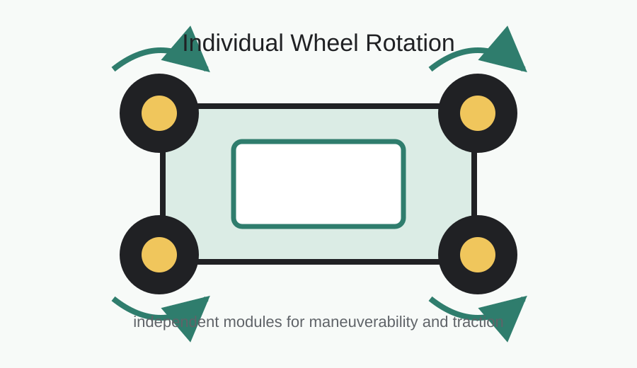

Individual Wheel Rotation System
May 2023 - Aug 2023

Introduction
Many vehicles lose maneuverability when all wheels are constrained by the same motion pattern. Independent wheel rotation can improve turning, traction control, and stability, especially for small robotic or experimental vehicle platforms. This project translated that idea into a functional prototype.
Design Process
I collaborated on CAD models for the wheel hub layout, then used 3D printing to turn the model into testable parts. The prototype went through fit checks and mechanical revisions so motors, printed components, and controls could be integrated into a working assembly rather than remaining separate subsystems.
Evaluation
Testing focused on whether the prototype could demonstrate independent wheel behavior and whether the assembly had enough stability for repeated motion. The most useful feedback came from physical testing: small alignment and stiffness issues were easier to identify once the motors and printed parts were operating together.
My Contribution
- Designed CAD models for the wheel hub and vehicle integration layout.
- Built and tested 3D-printed prototypes, revising parts for fit and strength.
- Integrated motors and control components into a functional prototype.
- Evaluated how independent wheel motion affected maneuverability, traction, and stability.